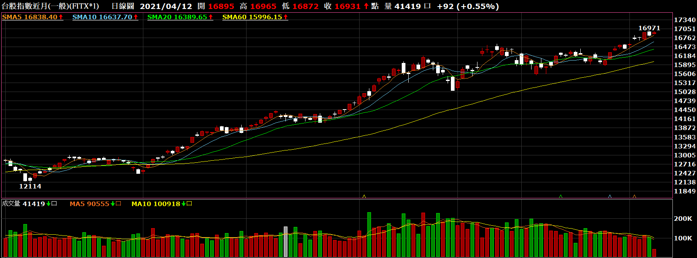

投資期貨是常見的理財管道，而在眾多類型的期貨中，期指（指數期貨）是十分受到投資客喜愛的投資選項， 其中又以「台指期貨」為台灣指數期貨市場的熱門商品。不過期指究竟是什麼嗎？進行台指期貨買賣時又該注意什麼？ 跟著本篇的台指期貨教學，帶各位一起了解指數期貨的運作方式。
期指是什麼？指數期貨怎麼看？
您知道期指是什麼嗎？其完整名稱為「指數期貨」，是眾多期貨類型的其中一種， 常見的代表像是金融指數、恆生指數、道瓊斯指數等，也與其他期貨一樣，指數期貨同樣有特定標的物。
指數期貨，就是買賣雙方約定好股票市場未來的某個時間點，以事先定好的標的指數進行交易，等到期後再以當下的股價指數差異進行金額結算。 而指數期貨中的「指數」，即為股票的加權指數，也是其對應的標的物，會依據股票市場的加權指數漲跌變化，所以指數期貨的利潤與虧損與股票大盤的走向息息相關。
台指期貨是什麼？
台灣的指數期貨市場以「台指期貨」為最大宗，顧名思義是以台灣股票指數為標的物的股價指數期貨， 而台指期貨的每一單位為「1口台指期」，在商品分類上則有大台與小台的差異：
- 大台，代號TX，一點價值為200元
- 小台，代號MX，一點價值為50元
舉例來說，如果今天大盤顯示為1萬點，那麼一口大台的價值就是200萬，一口小台的價值為50萬，大台、小台不只基本價值不同， 對應的原始保證金與維持保證金也不一樣，進行買賣投資前需要多加留意
台指期貨的買賣教學篇
台指期貨教學其實並不複雜，即是透過預測股票指數上漲或下跌，進而從中獲取利潤的方式，不只是上漲可以賺錢， 利用指數下跌也是從中獲利的一種方式。那要如何進行台指期貨的買賣呢？可以參考以下教學步驟：
- 理解台指期貨的基本運作模式
- 明日如期上漲200點，則獲利200x200（大台一點價值）＝40000元
- 明日若下跌100點，即虧損100x200＝20000元，必要時需補繳保證金，以維持最低保證金額。（需注意若未在規定時間內進行補繳，保證金將被證券商全數收走。）
- 了解台指期貨的交易費用
- 台指期貨開戶
台指期貨的交易時間共有19個小時，日盤為8：45開盤，13：45收盤；夜盤則是從15：00至隔日的凌晨5：00結束。 而利潤與虧損的計算也不會太困難，假設今日預期隔天台股大盤即將上漲，而買進了「一口大台」的台指期貨：
在期貨交易的金額流向中，除了基本的原始保證金以及維持保證金之外，也要留意在買賣過程中延伸的各項費用，如結算、交割的手續費用、交易經手費等。 其中費用會因不同的期貨商、證券商而有差異，決定前可先對多家期貨交易商進行詢問、比較。
了解指數期貨的基本運作與費用後，下一步就是選擇期貨交易商，進行台指期貨的開戶作業， 而挑選依據可從商家的品牌規模、口碑形象，以及是否習慣交易平台的模式、監管單位體系能否給予足夠保障等， 都可作為考量因素。
在決定好期貨交易商之後，便可攜帶相關證件、與開戶文件前往申請，後續的開戶流程都會有專人協助， 依照指示逐步進行即可。
若是有任何問題想要諮詢或是要預約開戶，也都【
歡迎與我們聯繫】，我們將會儘速與您聯絡喔！